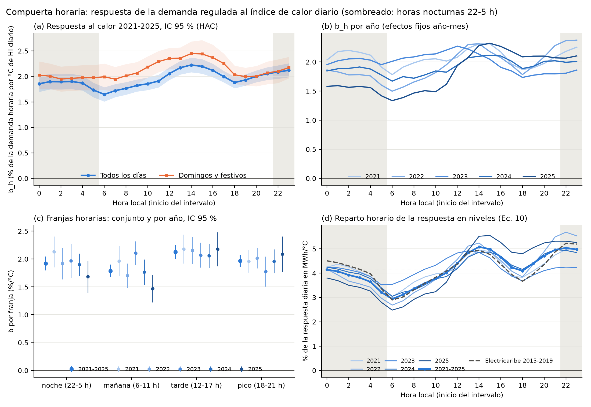

Respuesta horaria al calor (compuerta horaria)#
Ninguna encuesta registra a qué hora se usa el A/C (Supuestos, sensibilidad y limitaciones). La única fuente horaria disponible es la demanda de energía que publica XM, y la propuesta prevé una prueba previa, la compuerta horaria, para decidir si esa demanda puede usarse para calibrar la forma horaria del uso del A/C. Si la demanda tiene una respuesta horaria al calor distinta de cero y estable entre años, la forma horaria se calibra contra XM (capa B). Si no es estable, la forma horaria queda como supuesto declarado, con su rango y su análisis de sensibilidad (capa C). Este capítulo documenta la estimación con los años 2021–2025 y su resultado: la forma horaria del A/C queda en capa C.
Datos#
Demanda. Demanda comercial horaria del mercado de comercialización «CARIBE SOL», mercado regulado, de la API pública de XM (XM S.A. E.S.P., 2026). Es el mercado de Air-e desde octubre de 2020 (Atlántico, Magdalena y La Guajira) e incluye las pérdidas asignadas al mercado. Para 2015–2019, cuando ese mercado no existía, se usó como contraste la demanda de los agentes de Electricaribe (EDCC y EDIC). También se descargó la demanda no atendida diaria de las subáreas Atlántico y GCM (Guajira, Cesar y Magdalena), que sirve para marcar los días con cortes. Son series agregadas del mercado; no hay datos por usuario.
Clima. Serie horaria de ERA5-Land (Muñoz-Sabater et al., 2021) en la celda de Barranquilla (10,96° N; 74,80° O), convertida a hora local (UTC−5). Por ahora proviene de la copia de ERA5-Land que sirve Open-Meteo (Zippenfeld, 2023), que no requiere credenciales; la descarga directa del Climate Data Store queda pendiente (Datos sospechosos y pendientes). Como contraste se usó la estación 0029045190 del aeropuerto Ernesto Cortissoz del IDEAM (IDEAM, 2026), con los registros de cada hora en punto. La humedad relativa se calcula con la fórmula de Magnus (Alduchov y Eskridge, 1996) y el índice de calor (HI) con la regresión de Rothfusz que usa la NOAA (Rothfusz, 1990). La variable explicativa es el HI medio de cada día, \(HI_d\).
Método#
Para cada hora del día \(h\) se estima una regresión de la ecuación 10 de la propuesta:
donde \(L_{d,h}\) es la demanda del día \(d\) en la hora \(h\) (0 = de 00:00 a 01:00, hora local), \(\mathbf{t}_d\) indica el tipo de día (sábado; domingo o festivo; fin de año, del 24 de diciembre al 6 de enero; Carnaval; Semana Santa) y \(\delta_{h,m(d)}\) es un efecto fijo de cada año-mes. Con el logaritmo, \(b_h\) es el cambio porcentual de la demanda de la hora \(h\) por cada °C de HI diario, de modo que se comparan formas y no niveles. Los efectos fijos absorben el crecimiento de la demanda, la estacionalidad y los cambios del mercado, así que \(b_h\) sale de la variación del calor entre días de un mismo mes. Los errores estándar son HAC con 7 rezagos diarios (Newey y West, 1987).
La muestra tiene 1.399 días de 2021–2025. De los 1.826 días del periodo se excluyeron 427: 221 con horas anómalas (más de 12 % por fuera de la mediana móvil de su hora y tipo de día, que indica desconexiones o fallas de medida) y 239 con demanda no atendida mayor que 0,5 % de la demanda del mercado en Atlántico y GCM (algunos días cumplen las dos condiciones). El año 2020 no se usa por la pandemia y 2026 se reserva para la prueba ciega.
Respuesta por franja horaria#


Figura 21 Respuesta de la demanda regulada del mercado de Air-e al índice de calor diario. (a) \(b_h\) de 2021–2025 con su IC 95 %, todos los días y domingos y festivos; (b) \(b_h\) por año; (c) respuesta por franja, conjunta y por año; (d) reparto horario de la respuesta en niveles (MWh/°C). El sombreado marca las horas nocturnas (22 a 5 h).#
Franja |
\(b\) |
IC 95 % |
Diferencia en domingos y festivos |
\(p\) de la diferencia |
|---|---|---|---|---|
Noche (22 a 5 h) |
1,92 |
1,79 – 2,05 |
+0,12 |
0,22 |
Mañana (6 a 11 h) |
1,79 |
1,67 – 1,90 |
+0,34 |
0,001 |
Tarde (12 a 17 h) |
2,13 |
2,01 – 2,25 |
+0,28 |
0,008 |
Pico (18 a 21 h) |
1,97 |
1,86 – 2,08 |
+0,07 |
0,45 |
Un grado más de HI diario sube la demanda entre 1,8 % y 2,1 % en todas las franjas (Tabla 17). La respuesta nocturna es distinta de cero: las 8 horas de 22 a 5 h tienen el intervalo por encima de cero, y la franja también en cada año. El perfil es casi plano. \(b_h\) va de 1,65 a las 6 h a 2,22 a las 14 h. Expresada en MWh/°C, la noche recibe entre 31 % y 34 % de la respuesta diaria según el año, casi lo mismo que un reparto uniforme de 8 de 24 horas (33 %). En domingos y festivos aumenta la respuesta diurna, no la nocturna.
Año |
Días |
\(b\) nocturno (%/°C) |
IC 95 % |
Noche / tarde |
Reparto nocturno de la respuesta en MWh/°C (%) |
|---|---|---|---|---|---|
2021 |
276 |
2,13 |
1,85 – 2,41 |
0,98 |
34,1 |
2022 |
297 |
1,92 |
1,64 – 2,20 |
0,89 |
32,9 |
2023 |
278 |
1,97 |
1,66 – 2,28 |
0,95 |
32,5 |
2024 |
266 |
1,90 |
1,70 – 2,10 |
0,92 |
33,4 |
2025 |
282 |
1,68 |
1,40 – 1,97 |
0,77 |
31,0 |
Estabilidad entre años y decisión#
La regla de la compuerta tiene dos criterios:
La respuesta nocturna es distinta de cero. La franja de 22 a 5 h tiene \(b > 0\) con el IC 95 % sobre cero, y al menos 6 de las 8 horas nocturnas también. Se cumple: las 8 horas y los 5 años (Tabla 18).
La respuesta nocturna es estable entre años, en nivel y en forma. El nivel nocturno es significativo en al menos 4 de los 5 años y no difiere entre años (prueba de Wald con errores HAC). Se cumple: \(p = 0{,}35\). La forma nocturna centrada (\(b_h\) menos la media nocturna del año) no difiere entre años (prueba de Wald conjunta con errores agrupados por semana). No se cumple.
La forma nocturna existe (\(p < 10^{-17}\), con una amplitud de 0,39 puntos entre la hora de mayor y la de menor respuesta), pero cambia entre años (\(p = 0{,}008\); 28 grados de libertad, 262 semanas). La señal del encendido nocturno, el exceso de las 22 y 23 h sobre la media de la noche, va de −0,13 puntos en 2023 a +0,45 puntos en 2022: la forma cambia entre años tanto como su propia amplitud. La inestabilidad se mantiene al tomar la noche contigua, de 22 h a 5 h del día siguiente (\(p = 0{,}0001\)), y con la demanda de Electricaribe de 2015–2019 (\(p = 0{,}0001\)). Una primera versión de la regla, basada en la correlación entre el perfil de cada año y el conjunto, resultó inestable con perfiles tan planos (mínima de −0,04 en 2023) y también daba capa C.
Decisión: capa C. La hora media del encendido nocturno del A/C y su dispersión no se calibran contra XM. Quedan como supuesto declarado, con rango y análisis de sensibilidad (supuesto S16 en Supuestos, sensibilidad y limitaciones).
Lo que XM sí restringe#
Aunque la forma hora a hora no es estable, la demanda sí restringe la respuesta por franjas, y eso puede entrar en la Fase 3 como blanco de validación del modelo:
La respuesta nocturna es de 1,92 %/°C (IC 95 %: 1,79 a 2,05) y su nivel no cambia entre años.
La noche aporta entre 31 % y 34 % de la respuesta diaria en MWh/°C.
La respuesta nocturna equivale a entre 0,77 y 0,98 veces la de la tarde, según el año.
Cautelas#
XM no es demanda residencial. El mercado de Air-e mezcla usuarios residenciales, comerciales y oficiales de tres departamentos, y se usa el clima de Barranquilla como referencia de todos. Una respuesta nocturna positiva es compatible con el uso residencial del A/C, pero no lo prueba.
El nivel de \(b\) depende de la fuente del HI. Con el HI de IDEAM (654 días con datos suficientes) la respuesta nocturna baja a 0,94 %/°C. ERA5-Land subestima el HI de mediodía (Tabla 27), y el HI de IDEAM tiene más ruido de medida y menos días.
Clima provisional. ERA5-Land viene de la copia de Open-Meteo. Cuando se descargue el archivo del Climate Data Store hay que repetir el procesamiento del clima y la estimación (
01_clima.py procesary03_estimar.py).La regla es de este ejercicio. Los umbrales (6 de 8 horas, 4 de 5 años, \(p > 0{,}05\)) se fijaron para esta prueba; no provienen de una norma.
Archivos#
Tablas en tablas/: franjas.csv (respuesta por franja, conjunta y por año, y diferencia de domingos y festivos), b_h_por_hora.csv (\(b_h\) de todas las especificaciones, incluidas las de robustez), estabilidad.csv (criterios por año), b_h_niveles_reparto.csv (ecuación (10) en niveles y reparto horario), contraste_era5land_ideam.csv (sesgo y RMSE por hora y por mes) y decision.json (regla y resultado de la compuerta). Scripts en scripts/compuerta/ (Reproducibilidad). Las descargas crudas de XM, Open-Meteo e IDEAM no se publican; los scripts las reconstruyen desde las fuentes públicas.